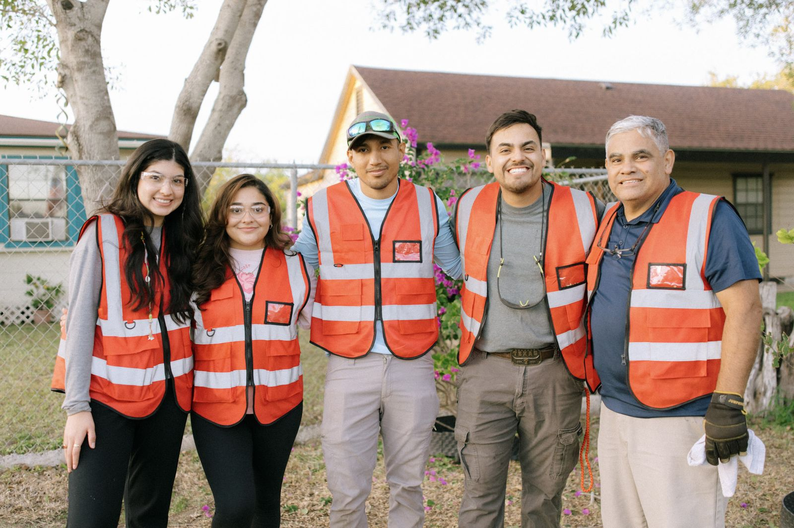
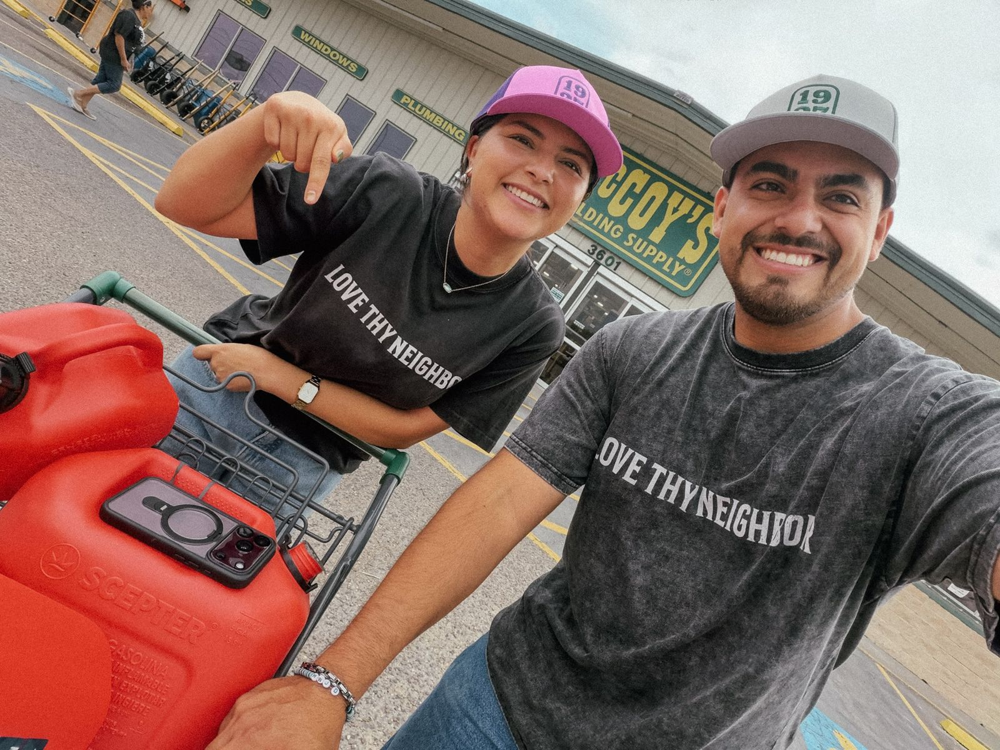

Participa
Venga a ser un buen vecino.
Casi todos los grupos se juntan el sábado por la mañana y terminan antes del almuerzo. No necesita experiencia. Nosotros llevamos las herramientas.
POINT es la aplicación gratis que usamos para el registro. ¿Preguntas? Llame al (956) 320-3378.

Próximos eventos
Escoja una fecha con lugares disponibles. El lugar de reunión se comparte después del registro, para proteger la privacidad de nuestros vecinos.
-
28nov
Apúntate: Día de limpieza de patio, Sábado 28 de noviembreDía de limpieza de patio
8 lugares disponibles
-
5dic
Apúntate: Puesto de GoodWorks Market, Sábado 5 de diciembrePuesto de GoodWorks Market
5 lugares disponibles
-
6dic
Apúntate: Clasificación de regalos, Angels for Amigos, Domingo 6 de diciembreClasificación de regalos, Angels for Amigos
22 lugares disponibles
-
19dic
Apúntate: Día de limpieza de patio, Sábado 19 de diciembreDía de limpieza de patio
7 lugares disponibles
De nuestra página de POINT, revisada el 20 de noviembre de 2026.
Qué esperar
-
1 Apúntese
Escoja una fecha en POINT. Recibirá el lugar de reunión y un recordatorio.
-
2 Prepárese
Firme un permiso corto. Use zapatos cerrados, pantalón largo y gorra. Traiga agua.
-
3 Llegue
Le damos guantes, un chaleco y una tarea. Los voluntarios de limpieza deben tener 16 años o más.
Traiga a su grupo
Iglesias, negocios, clubes escolares y familias sirven juntos todo el tiempo. Díganos cuántos son y buscamos una fecha.
Seis puestos de liderazgo abiertos
Son trabajos reales con responsabilidad real. Cada uno es un puesto voluntario de 3 a 5 horas por semana.
-
Coordinador de voluntarios
Recibir a los nuevos voluntarios, llenar los grupos y mantener POINT al día.
Escríbanos sobre este puesto -
Coordinador de preparación y logística de GoodWorks
Clasificar los artículos donados, planear el puesto y llevarlo al mercado.
Escríbanos sobre este puesto -
Coordinador de redes sociales
Contar la historia de cada evento en Instagram y Facebook.
Escríbanos sobre este puesto -
Coordinador de fotografía y video
Documentar cada día de limpieza de principio a fin, cuidando la privacidad.
Escríbanos sobre este puesto -
Coordinador de alcance y alianzas
Crear lazos con iglesias, negocios y agencias que sirven a personas mayores.
Escríbanos sobre este puesto -
Especialista en subvenciones
Buscar fondos que encajen y ayudar a escribir las solicitudes.
Escríbanos sobre este puesto

Pasantías
Los estudiantes pueden ganar experiencia, y muchas veces crédito escolar, con un trabajo que importa en su propia ciudad.
- Operaciones de una organización y manejo de voluntarios
- Mercadeo, foto y video
- Trabajo social y alcance comunitario
- Subvenciones y recaudación de fondos
Las pasantías duran un semestre, unas 8 horas por semana. Las vacantes se publican en Handshake.